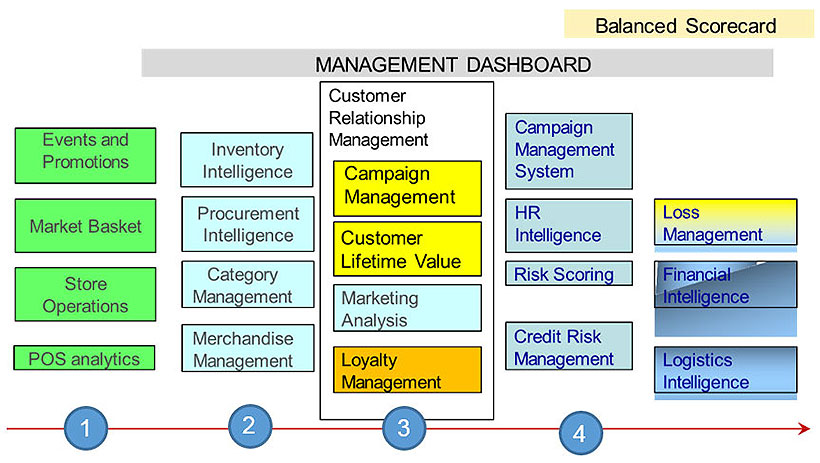

2 - Analytics Journey
“I’m trying to start analytics in my business.
Based on your experience, can you advise me which of the following areas typically happens first in an analytics journey in retail? ”
Select your answer, and click Done.
You have completed this Quiz.
2.1 - Typical Analytics Journey
The diagram below shows how an analytics journey typically happen in retail (from left to right).

- The first set of analytics retailers normally do are based on Store Operations or the Point-of-Sale analytics (in green).
- Then, retailers move on to supply chain and merchandising (in light blue).
- You’ll find that the customer relationship management or CRM comes later.
- Followed by areas in corporate administration, such as Human Resource Intelligence (in darker blue).
CRM versus POS
Further Reading
2.2 - Online versus Brick-and-mortar
Future of retail
📑 References